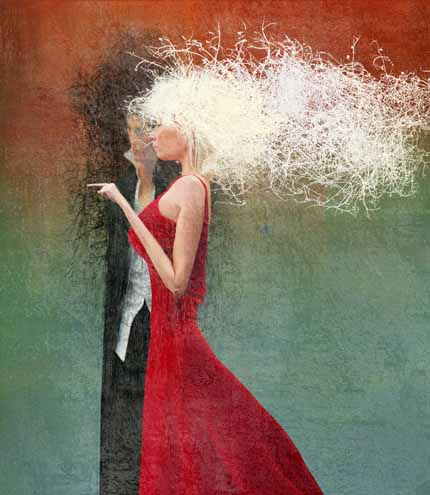
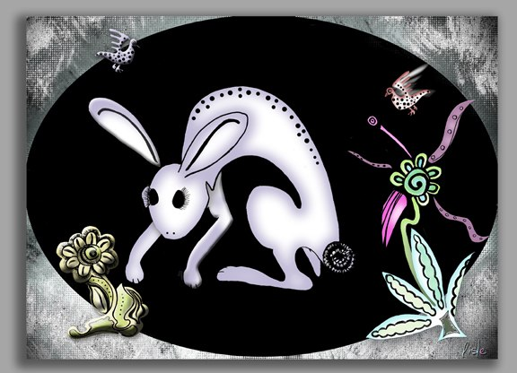
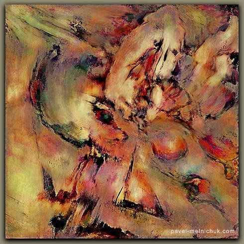
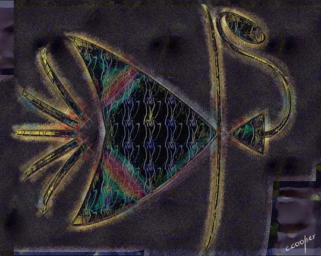
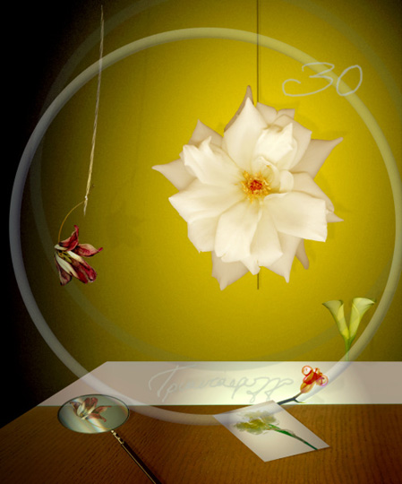
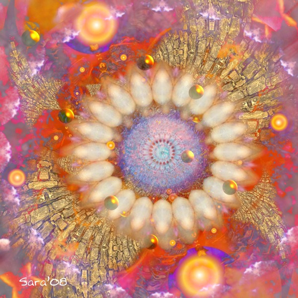

IMAGES OF THE DAY 60
02/11/2023 - 02/20/2023

Photo Art
Photomontage
No. 032
by Bogdan Prystrom
02/11/2023
Click image to access artist's full exhibit
Drawn/Painted
Sailing to Maui
by Shige Yamada
02/12/2023
Click image to access artist's full exhibit

Photography and Mixed Media
Turinstan C
by Andreina Polo
02/13/2023
Click image to access artist's full exhibit

Astronomical Portraits
Pied Piper
by Ciro Marchetti
02/14/2023
Click image to access artist's full exhibit

Alchemy 
In My Moonlit Garden
by Lisle Drake
02/15/2023
Click image to access artist's full exhibit
Digital Brush Paintings 
Crucial Point
by Pavel Melnichuk
02/16/2023
Click image to access artist's full exhibit
Paintographs 
The Pragmatic S
by Carol Cooper
02/17/2023
Click image to access artist's full exhibit
Studies in Arts and Sciences 
Study in Horticulture: Rose
by Lily E. Smernou
02/18/2023
Click image to access artist's full exhibit
Mixed Technique
Chrome Allusion
Exceptional Insight
by Stephen Burns
02/19/2023
Click image to access artist's full exhibit

CyberAlchemy 
Birth of Spring
by Sara Deutsch
02/20/2023
Click image to access artist's full exhibit
BACK TO IMAGES OF THE DAY 59
NEXT